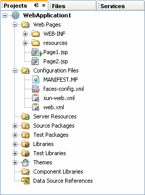

Projects Window for Visual Web JSF Projects
Open the Projects window by choosing Window > Projects from the
main menu. The Projects window shows a logical view of the elements of your projects. It is typically located on the top left side of
the IDE and shares space with the Files and Services windows.
